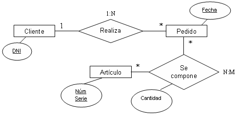
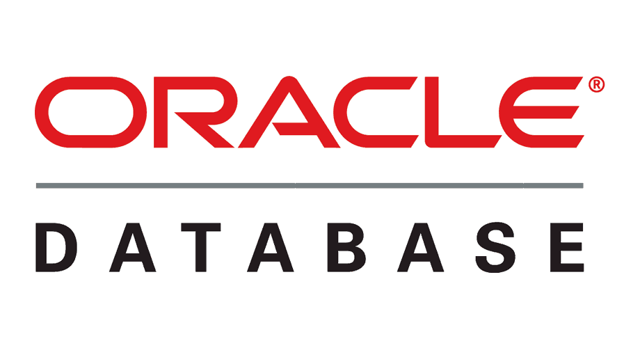

Programación de Aplicaciones Telemáticas
Tema 8: Introducción a la persistencia de datos
Agenda
Sessión 1
- Introducción
- Tipos de base de datos
- Bases de datos relacionales
- Bases de datos clave-valor
- Bases de datos documentales
- Bases de datos orientadas a Time Series
- Base de datos orientada a grafos
- SQL
- Referencias
Introducción
Una base de datos es una colección organizada de información estructurada, o datos, normalmente almacenados electrónicamente en un sistema informático. Una base de datos suele estar controlada por un sistema de gestión de bases de datos (SGBD).
Tipos de bases de datos
- Bases de datos relacionales
- Bases de datos clave-valor
- Bases de datos documentales
- Bases de datos orientadas a Time Series
- Base de datos orientada a grafos
Bases de datos relacionales
Introducción
Una base de datos relacional es un tipo de base de datos que almacena y proporciona acceso a puntos de datos relacionados entre sí. Las bases de datos relacionales se basan en el modelo relacional, una forma intuitiva y directa de representar datos en tablas.
Bases de datos relacionales
Introducción
En una base de datos relacional, cada fila en una tabla es un registro con una ID única, llamada clave. Las columnas de la tabla contienen los atributos de los datos y cada registro suele tener un valor para cada atributo, lo que simplifica la creación de relaciones entre los puntos de datos.
Bases de datos relacionales
Estructura de las bases de datos relacionales
El modelo relacional implica que las estructuras lógicas de los datos (las tablas, las vistas y los índices) estén separadas de las estructuras de almacenamiento físico. Gracias a esta separación, los administradores de bases de datos pueden gestionar el almacenamiento físico de datos sin que eso influya en el acceso a esos datos como estructura lógica.
Bases de datos relacionales
Estructura de las bases de datos relacionales
Tablas:
Una tabla es un conjunto de datos relacionados entre sí que se guardan en formato de tabla dentro de una base de datos. Consta de columnas y filas.
https://en.wikipedia.org/wiki/Table_(database)
Bases de datos relacionales
Estructura de las bases de datos relacionales
Tablas:
Bases de datos relacionales
Estructura de las bases de datos relacionales
Vistas:
En una base de datos, una vista es el conjunto de resultados de una consulta almacenada sobre los datos, que los usuarios de la base de datos pueden consultar de la misma manera que lo harían en una base de datos persistente persistente. Este comando de consulta preestablecido se guarda en el diccionario de la base de datos.
https://en.wikipedia.org/wiki/View_(SQL)
Bases de datos relacionales
Estructura de las bases de datos relacionales
Vistas:

Bases de datos relacionales
Estructura de las bases de datos relacionales
Indices:
Un índice de base de datos es una estructura de datos que mejora la velocidad de las operaciones de recuperación de datos en una tabla de base de datos a costa de escrituras y espacio de almacenamiento adicionales para mantener la estructura de datos del índice.
https://en.wikipedia.org/wiki/Database_index
Bases de datos relacionales
Estructura de las bases de datos relacionales
Indices:
Bases de datos relacionales
Modelo Entidad-Relación
Un modelo entidad-relación es una herramienta para el modelo de datos, la cual facilita la representación de entidades de una base de datos. Fue definido por Peter Chen en 1976.
Bases de datos relacionales
Alternativas:
|  | |
https://db-engines.com/en/ranking/relational+dbms
Bases de datos clave valor
Introducción
Una base de datos clave-valor es un tipo de base de datos no relacional que utiliza un método simple de clave-valor para almacenar datos. Una base de datos clave-valor almacena datos como un conjunto de pares clave-valor en los que una clave sirve como un identificador único. Tanto las claves como los valores pueden ser cualquier cosa, desde objetos simples hasta objetos compuestos complejos.
Bases de datos clave valor
Alternativas:
- Redis
- Amazon DynamoDB
https://db-engines.com/en/ranking/key-value+store
Bases de datos documentales
Introducción
Una base de datos documental está constituida por un conjunto de programas que almacenan, recuperan y gestionan datos de documentos o datos de algún modo estructurados. Este tipo de bases de datos constituyen una de las principales subcategorías dentro de las denominadas bases de datos NoSQL.
Bases de datos documentales
Alternativas:
Bases de datos orientadas a Time Series
Introducción
Una base de datos de series de tiempo (TSDB) es un sistema de software que está optimizado para manejar datos de series de tiempo, matrices de números indexados por tiempo (un intervalo de fecha / hora)
Bases de datos orientadas a Time Series
Alternativas:
- InfluxDB
- Prometheus
https://db-engines.com/en/ranking/time+series+dbms
Base de datos orientada a grafos
Introducción
En informática, una base de datos de grafos (GDB) es una base de datos que utiliza estructuras de grafos para consultas semánticas con nodos, aristas y propiedades para representar y almacenar datos. Un concepto clave del sistema es el grafo (o arista o relación). El grafo relaciona los elementos de datos del almacén con una colección de nodos y aristas, Las aristas representan las relaciones entre los nodos.
Base de datos orientada a grafos
Alternativas:
- Neo4j
https://db-engines.com/en/ranking/graph+dbms
SQL
SQL es un lenguaje de programación utilizado por casi todas las bases de datos relacionales para consultar, manipular y definir datos, y para proporcionar control de acceso.
SQL
SELECT:
SELECT column1, column2, ...
FROM table_name;
SQL
INSERT:
INSERT INTO table_name (column1, column2, column3, ...)
VALUES (value1, value2, value3, ...);
SQL
UPDATE:
UPDATE table_name
SET column1 = value1, column2 = value2, ...
WHERE condition;
SQL
DELETE:
DELETE FROM table_name WHERE condition;
Referencias
- https://www.iso.org/standard/63555.html
- https://en.wikipedia.org/wiki/SQL
- https://www.oracle.com/database/what-is-database/
- https://es.wikipedia.org/wiki/Modelo_entidad-relaci%C3%B3n
- https://db-engines.com/en/ranking
- https://es.wikipedia.org/wiki/Base_de_datos_documental